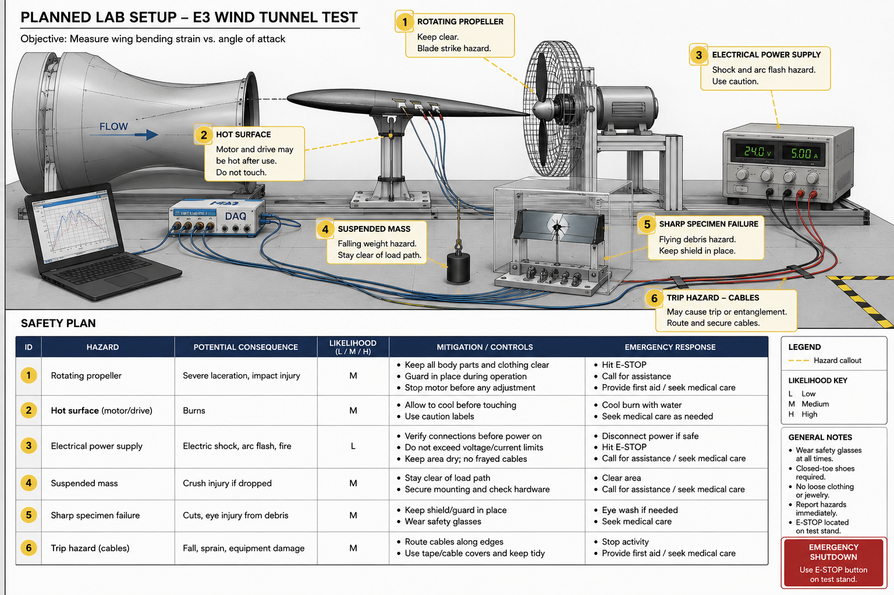
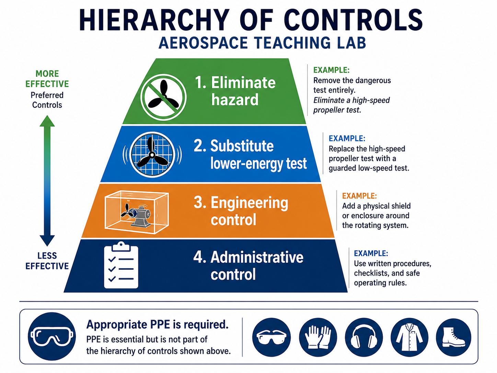

Basics of an Experimental Safety Plan
Credible experiments include credible control of what can go wrong
An experiment that cannot explain its hazards is not ready to leave the page.
Safety planning is sometimes treated as an administrative step that happens after the real engineering is done. That is backwards. A physical experiment changes the world on purpose. It applies loads, moves parts, heats surfaces, stores energy, spins motors, pressurizes fluids, powers circuits, or asks people to work near equipment that can fail. A basic experimental safety plan says what could go wrong, how likely it is, how serious it would be, and what controls make the test acceptable.

*This image shows what a safety plan looks like when it is tied directly to the real setup instead of written as a generic compliance paragraph.
The first section is hazard identification. A hazard is a source of possible harm, not merely a thing that feels dangerous. Stored electrical energy, rotating hardware, pressurized containers, hot components, suspended weights, brittle fracture, sharp edges, chemical exposure, laser light, and loud noise are all examples. For E3, you may not build the experiment. Your design still needs to show that you can recognize the hazards your proposed setup would create.
The next step is risk assessment. Risk combines likelihood and consequence. A minor hazard that is very likely deserves attention. A severe hazard that is unlikely also deserves attention. Engineers often use a simple risk matrix to classify hazards by severity and probability. The exact matrix matters less in this course than the reasoning: do not treat all hazards as equal, and do not ignore a hazard just because it is familiar.
Mitigation measures are the controls that reduce risk. Engineering controls change the setup itself: guards around rotating parts, current limits, pressure relief valves, fixtures that capture failed specimens, thermal insulation, or physical barriers. Administrative controls change the procedure: training, checklists, exclusion zones, two-person rules, pre-test inspections, or maximum operating limits. PPE, or personal protective equipment, protects the person: safety glasses, gloves, hearing protection, lab coats, or face shields. PPE matters, but it is usually the last line of defense, not the main design solution.

*This image reinforces that good lab safety starts by redesigning the risk out of the activity when possible, not by jumping straight to PPE.
Emergency procedures should be short and specific. If something fails, who shuts off power? Where is the emergency stop? What condition requires evacuating the area? Who is notified? Where are first aid, fire extinguisher, spill kit, or eyewash resources if relevant? A safety plan that says "be careful" is not a plan. A safety plan that says "If current exceeds the limit or smoke is observed, disconnect power at the bench supply and notify the instructor immediately" is much closer.
Safety planning also connects to validation quality. If a setup is unsafe, operators rush, modify procedures informally, avoid certain operating points, or collect fewer repeats. That damages data quality. A safe setup is not only ethically required. It is technically better because it allows the experiment to be conducted consistently and calmly. This is especially important in E3, where your proposed experiment must be achievable in the time and resource constraints of the course.
Approval and sign-off close the loop. In professional environments, a test may require review by a lab manager, safety officer, principal investigator, or responsible engineer before it runs. In this course, the instructor or TA plays that role. Your paper design should make their review possible. Name hazards, controls, operating limits, and stop conditions clearly enough that a responsible person could decide whether the experiment is acceptable.
The Takeaway: A safety plan is part of experimental design, not a separate chore. It identifies hazards, evaluates risk, defines controls, states emergency procedures, and gives reviewers confidence that the proposed experiment could be conducted responsibly.